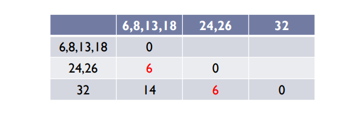

Clustering
ClusteringClustering AlgorithmsK-means AlgorithmPopulating ClustersTerminitation ConditionsInitial Seed ChoiceHierarchical ClusteringAlgorithmsHierarchical Agglomerative ClusteringBasic AlgortihmClosest Pair of ClustersSingle-linkExampleComplete-linkCentroidAverage-linkHAC CritiqueAdvantagesDisadvantagesTime Complexity
Clustering is the process of grouping a set of objects into classes of similar objects.
It is the most common form of unsupervised lerning
- Unsupervised learning is the act of learning from raw data
Clustering Algorithms
Partitional algorithms
Usually start with a random (partitial) partitioning
Refine it iteratively
- K-means clustering
- Model-based clustering
Hierarchical algortithms
- Bottom-up, agglomerative
- Top-down, divisive
K-means Algorithm
A partitional algortihm
Operates using centroids
- A centroid is a point in the data that is considered to be the center of the data
Start by picking k, the number of clusters
Initialise clusters by picking one point per cluster (seeds)
- e.g. pick data points at random
- Could also generate these randomly

Populating Clusters
Iterate until converged (centroid positions don't change from one iteration to another)
- Computer the distance from all data points to all k centroids
- For each data point, assign it to the cluster whose current centroid is nearest
- For each centroid, compute the average (mean) of all points assigned to it
- Replace the k centroids with teh new averages
Terminitation Conditions
- A fixed number of iterations
- Centroid positions don't change (can be proven to converge)
- Clusters look reasonable
Initial Seed Choice
- The final results can can vary based on the choice of initial centroids
- Some seeds can result in poor convergence rates or convergence to sub-optimal clustering
Hierarchical Clustering
Algorithms
Agglomerative (bottom up)
- Start with each data point being a single cluster
- Merge based on closeness/distance
- Eventually all data points belong to the same cluster
Divisive (top-down)
- Start with all data points belonging to the same cluster
- Split up based on distance
- Eventually each node forms a cluster on its own
Good
- Does not require the number of cluster k in advance
Bad
- Requires a termination/readout condition
Hierarchical Agglomerative Clustering
Assumes a similarity measure for determining the similarity of two data points
- =Distance function from before
Start with all points in seperate clusters
- Then repeaatedly joins the clusters that are most similar until there is only one cluster
The histoy of merging forms a tree or hierarchy
Basic Algortihm
Compute the distance matrix (= distance between any 2 data points)
let each data point be a cluster
Repeat
- Merge the two (or more) closest clusters
- Update the distance matrix
Untill only a single cluster remains
Closest Pair of Clusters
There are many variants of defining closest pair of clusters
Single-link
- Distance of the closest points
- Use minimum distance of pairs of data points
- Can result in straggly clusters due to a chaining effect
Example
- Compute the distance matrix
- Find the two smallest distances which in this case are 6 and 8, 24 and 26
- This makes the dendogram look like:

- Now recompute the distance matrix using the new points
- 13, 18, 6 and 8 are now all one point

- Form a new distance matrix 
- 24, 26 is closest to 6,8,13 and 18
- 32 is closest to 24,26

- The user can then chop the tree to form a certain number of clusters
Complete-link
Distance of the furthest points
Use maximum distance of pairs
Maxes "tighter" spherical clusters that are typically preferable
1D data {1,3,8,9,10}
Complete link clustering is 9
- The distance between 1 and 10
- = two furthest points across the clusters
Compute the distance matrix (= distance between any 2 points)
Let each data point be a cluster
Repeat
Merge the two (or more) closest clusters
Update the distance matrix
Until only a single cluster remains
Centroid
- Distance of the centroids (centers of gravity)
Average-link
- Average distance between pairs of elements
HAC Critique
Advantages
- K not required at the start
- A hierarchy is obtained
- Many possible clusterings can be derived
Disadvantages
- Where to slice the dendogram? (cluster validity measure might help here though)
- Complexity
- Which choice of linkage?
Time Complexity
In the first iteration all HAC methods need to compute similarity of all pairs of n individual data points = O(dn2)
In each of the subsequent merging iterations
- Compute the distance between the most recently created cluster(s) and all other existing clusters
Maintaining a heap of distances allows this to be O(dn2log(n))
- So not as fast as k-means